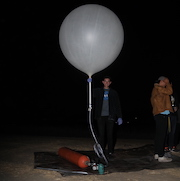
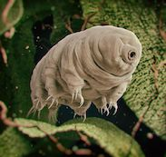

Projects
Balloons and Rockets and More
High Altitude Balloons
One of our past projects
was to launch an enormously powerful LED to 80,000 feet as a first test. Though we experienced some
issues with payload recovery, we are now working on a second launch.
Our second launch is a balloon carrying a payload of various sensors and a cloud chamber, which cools the alcohol vapor inside the
chamber, it supersaturating the air,
creating our own mini cloud; when a cosmic ray passes through it,
it ionizes the air allowing the vapor to condense and makes lines and patterns that are
really a sight to see.
Our next project will involve the study of microorganisms called tardigrades, which are a type of single celled organism that displays the interesting property of going into stasis when dehydrated, and can essentially come back to life at a later date once rehydrated. The organisms are exceptionally durable when in stasis and are ideally suited for long space journeys. Our experiment would observe their behavior at high altitude in order to learn more about these rare and interested bacterium. The experiment should hopefully lead to the development of a project to send an organism on journeys to other planets in the future.
Rockets
In order to fulfill our dream of sending something
to space, the Aerospace Research Cooperative will need to complete 3 certifications required to launch a rocket to certain altitudes.
We are currently working towards the first of these 3 certifications using a model rocket. Once we obtain our certifications,
ARC aims to participate in various rocketry competitions and festivals throughout California, including the NASA Student Launch,
LUNAR, and the LDRS.
We aim to make this launch this quarter.
 We are currently experimenting with building a rocket engine
that will praesent sit amet posuere risus, eu faucibus lectus. Vivamus ex ligula, tempus pulvinar ipsum in, auctor
porta quam. Proin nec dui cursus, posuere dui eget interdum. Fusce lectus magna,
sagittis at facilisis vitae, pellentesque at etiam. Quisque posuere leo quis sem commodo,
vel scelerisque nisi scelerisque. Praesent sit amet posuere risus, eu faucibus lectus. Vivamus ex ligula, tempus pulvinar ipsum in, auctor
porta quam. Proin nec dui cursus, posuere dui eget interdum. Fusce lectus magna,
sagittis at facilisis vitae, pellentesque at etiam. Quisque posuere leo quis sem commodo,
vel scelerisque nisi scelerisque.
We are currently experimenting with building a rocket engine
that will praesent sit amet posuere risus, eu faucibus lectus. Vivamus ex ligula, tempus pulvinar ipsum in, auctor
porta quam. Proin nec dui cursus, posuere dui eget interdum. Fusce lectus magna,
sagittis at facilisis vitae, pellentesque at etiam. Quisque posuere leo quis sem commodo,
vel scelerisque nisi scelerisque. Praesent sit amet posuere risus, eu faucibus lectus. Vivamus ex ligula, tempus pulvinar ipsum in, auctor
porta quam. Proin nec dui cursus, posuere dui eget interdum. Fusce lectus magna,
sagittis at facilisis vitae, pellentesque at etiam. Quisque posuere leo quis sem commodo,
vel scelerisque nisi scelerisque.